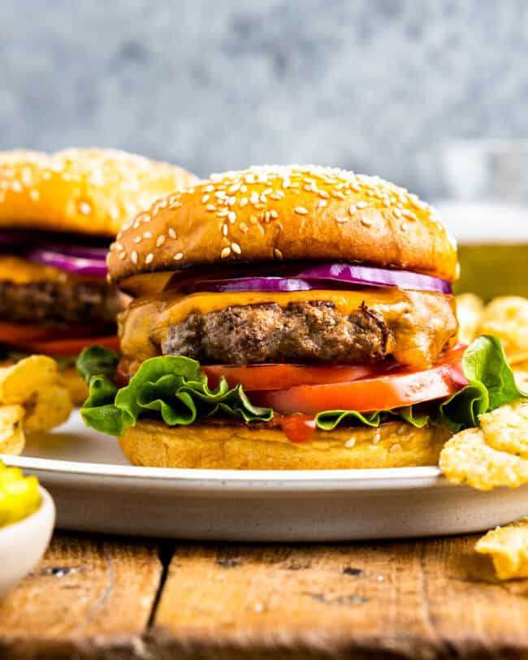

Homemade Burger Recipe

Stovetop Burgers are easier than you think!
Learning how to cook the perfect burgers on the stove
means you can make this easy dinner anytime of year
Cooking burgers on the stove only requires a few ingredients and 20 minutes to make.
The main thing you need is ground beef, and then the cheese, toppings
and seasonings are all up to you
ingredients
- 1 1/2 pounds ground beef (80% to 85% lean)
- Kosher salt
- Freshly ground black pepper
- 4 to 6 hamburger buns, split
- Olive oil
- 4 to 6 slices cheese, such as cheddar, swiss, American
- Burger toppings: sliced tomatoes, sliced onions, lettuce,
ketchup, mustard, BBQ sauce, pickles, relish
Steps
- Divide the ground beef and shape the patties
- Warm the pan and pour a generous amount of olive oil in
- Toast the buns
- Increase the heat to medium/high and cook the burgers for 3 to 5 minutes
- Season with salt and pepper
- Flip the burgers and place cheese on top, cook for a further 3 to 5 minutes
- Place burgers on toasted buns and finish with toppings of choice